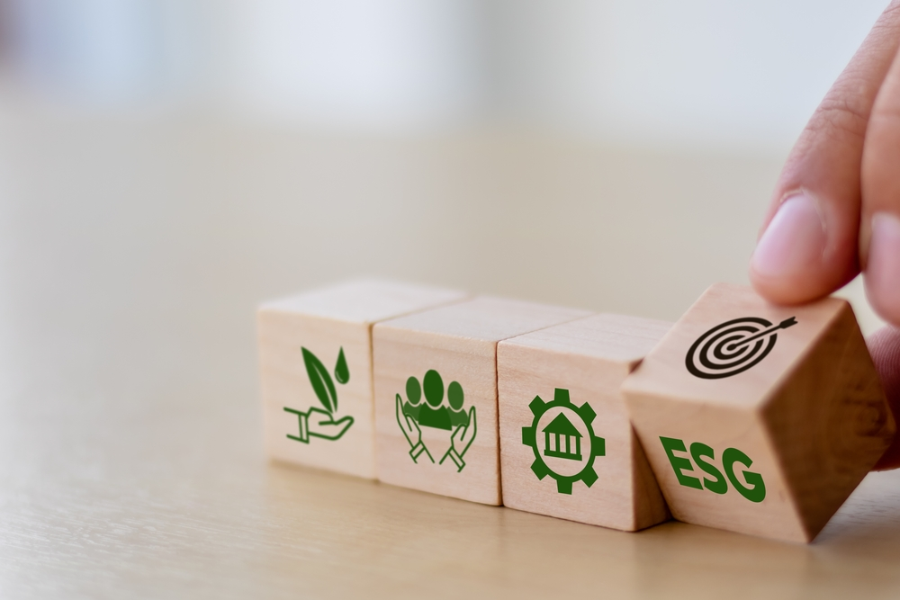
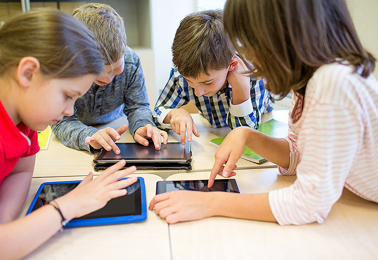

🌱 O Que é a Educação Ambiental Digital?
A educação ambiental digital consiste em um processo educativo que visa ensinar o uso consciente, ético e sustentável das tecnologias da informação e comunicação (TICs). Trata-se de promover a conscientização sobre os impactos ambientais provocados pelo consumo digital — como o uso intensivo de energia, descarte inadequado de dispositivos eletrônicos e o acúmulo de dados digitais — e desenvolver habilidades que permitam aos indivíduos agir de forma responsável no ambiente digital. Esse tipo de educação integra conceitos de sustentabilidade, cidadania digital e responsabilidade ambiental, formando cidadãos críticos e comprometidos com a preservação do planeta também no universo virtual.
🌍 Por Que Esse Tema É Tão Relevante?
Com o avanço acelerado das tecnologias, o uso constante da internet, das redes sociais, do armazenamento em nuvem e de dispositivos conectados tem gerado um fenômeno conhecido como poluição digital. Esse termo refere-se ao impacto ambiental gerado pelas atividades online, como o consumo de energia por data centers, a emissão de CO₂ associada ao uso prolongado de aparelhos eletrônicos e o desperdício de recursos na produção e descarte de equipamentos tecnológicos. Educar sobre sustentabilidade digital é essencial, principalmente nas escolas, para formar uma nova geração mais crítica, engajada e ambientalmente consciente. Afinal, cada clique, armazenamento de foto ou envio de e-mail tem um custo ambiental que muitas vezes passa despercebido.⚡ Impactos Ambientais do Mundo Digital
Apesar de parecer "invisível", o mundo digital deixa rastros significativos no meio ambiente. Entre os principais impactos estão: Consumo elevado de energia elétrica por servidores, data centers e equipamentos conectados 24 horas por dia. Acúmulo de dados desnecessários, como e-mails não lidos, arquivos duplicados e mídias obsoletas, que exigem armazenamento contínuo. Geração de lixo eletrônico, proveniente do descarte inadequado de celulares, computadores, cabos e outros dispositivos. Aumento da pegada de carbono digital, agravando o aquecimento global e o esgotamento dos recursos naturais.🏫 Educação Ambiental Digital nas Escolas
Inserir a temática da educação ambiental digital no ambiente escolar é uma maneira eficaz de sensibilizar os estudantes desde cedo sobre a relação entre o uso da tecnologia e a preservação do meio ambiente. A escola pode trabalhar esse conteúdo por meio de abordagens interdisciplinares, integrando áreas como Ciências, Geografia, Matemática e Tecnologia, além de propor atividades práticas, debates e ações coletivas.
💡 Sugestões de Atividades para Trabalhar o Tema
Campanhas de "faxina digital", onde os alunos limpam pastas, e-mails, aplicativos e nuvens de armazenamento, reduzindo o consumo energético dos servidores. Criação de blogs, sites ou podcasts voltados à sustentabilidade digital, elaborados por alunos como parte de projetos escolares. Oficinas e rodas de conversa sobre o ciclo de vida dos equipamentos eletrônicos, seu descarte correto e os perigos dos resíduos tóxicos. Desafios mensais de consumo consciente, com metas como reduzir o tempo de tela, reaproveitar dispositivos antigos ou usar softwares mais sustentáveis. Gamificação de práticas sustentáveis digitais, utilizando jogos educativos que incentivem boas práticas no ambiente virtual.🎓 Benefícios Para os Estudantes
Ao se engajarem com a educação ambiental digital, os alunos: Desenvolvem consciência socioambiental, entendendo seu papel na construção de um futuro mais sustentável. Aprendem a utilizar os recursos digitais de maneira mais inteligente, ética e responsável. Tornam-se agentes de transformação, levando o conhecimento adquirido para suas famílias, redes sociais e comunidades. Estimulam a criatividade e inovação, ao propor soluções para problemas ambientais usando a tecnologia a seu favor.✅ Conclusão
A educação ambiental digital é uma ferramenta poderosa para unir o avanço tecnológico à conservação do meio ambiente. Ao integrar esse tema às práticas pedagógicas escolares, é possível cultivar uma cultura digital mais sustentável, colaborativa e consciente. Com pequenas atitudes e grandes aprendizados, podemos transformar o mundo virtual em um espaço de cuidado com o mundo real. 🌎💻♻️